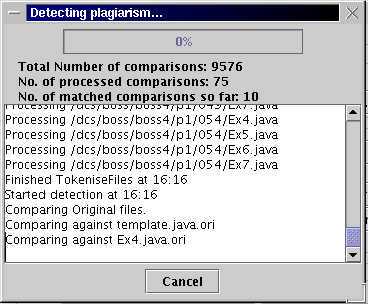

Message Window
Message window is popped up to show the process information in the detection stage. For example: the total number of pre-processed files and the number of pre-processed files. Also the large text area in the middle shows all the name of processed files and the processing files. In additional, the start and finish processing time are showed as well.
To view the message window
-Click "Show message window" on the Option menu
To clear it,
-Click "Clear message window" on the Option menu.
Message Window
